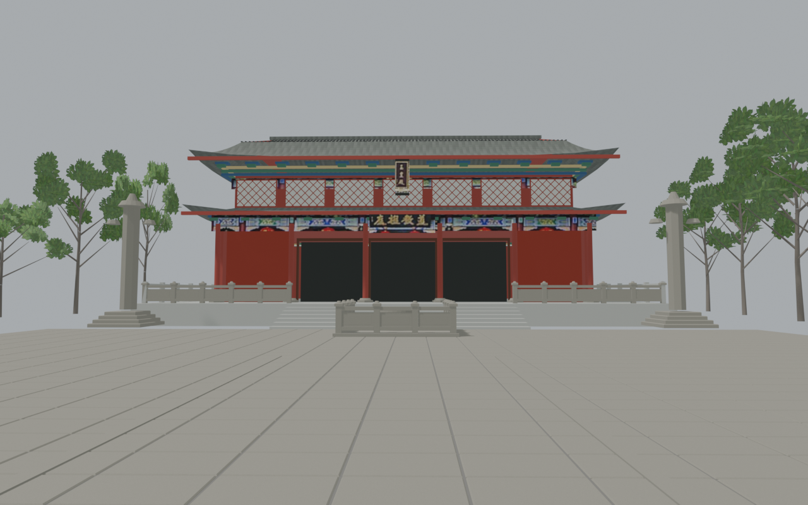
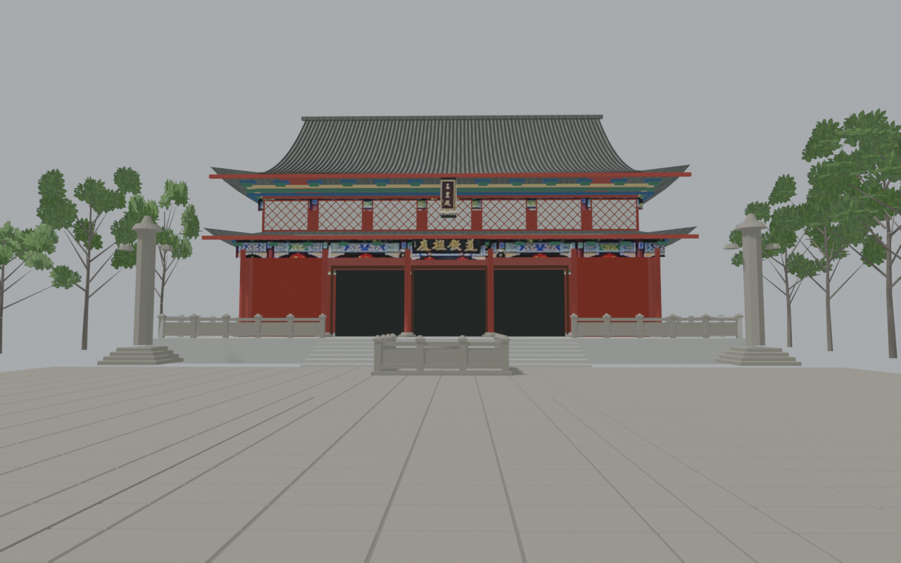
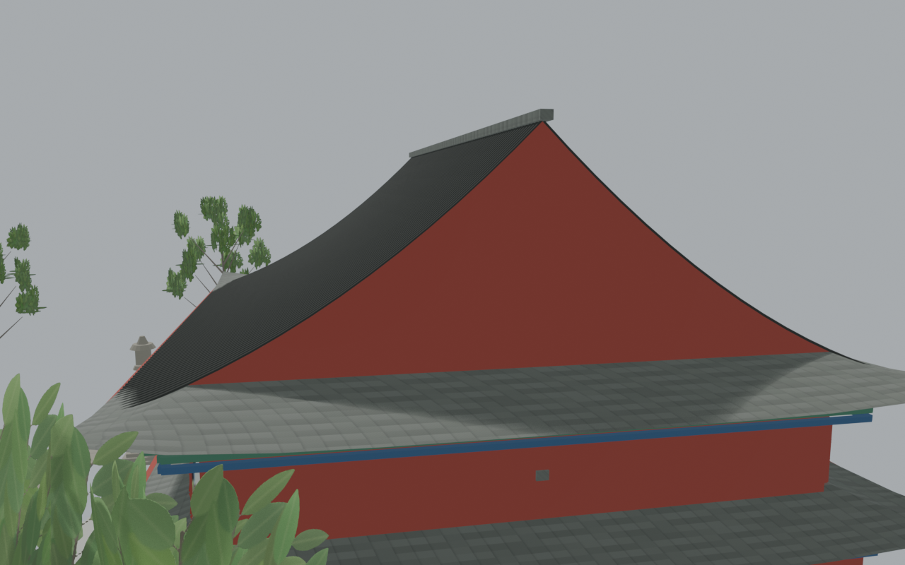

← 返回问山天师府 · 玉皇殿上屋面轮廓
依据院落正面与侧面照片，调整上屋面的比例，让屋坡、檐口与瓦垄形成连续轮廓。约27.9米的院落观察路线保持原有节点与范围。
相同机位与光照的模型对比

调整前：原院落模型的上屋面。
调整后：高坡体块与连续瓦面。两图均为 Blender 源模型预览，并非实拍。依据与估计范围
采用阿尧拍摄的玉皇殿正面及侧面普通照片作比例参考。屋脊提高2.5模型米，屋面顶高约15.4模型米；这些是视觉估计，不是现场测量或相机定标结果。庭院、房身、檐口位置、材质与原有图片保持不变。
山墙颜色、转角瓦列仍有简化；未新增未经确认的屋饰、文字、殿内陈设。此更新用于独立院落观察，尚不构成完整真实内部漫游。
原始玉皇殿图文 · 模型与来源记录
山墙接合检查

专用高位检查镜头；用于观察接合，不能当作与正面照片定标后的比较。实际导出的网页模型已重新导入检查。屋顶轮廓和颜色一致性通过独立复核；原有地面在源模型与导出模型之间的明暗解释差异仍有记录，未宣称全图逐像素一致。